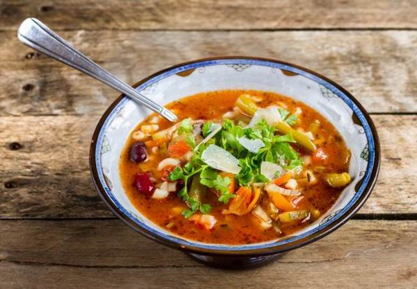

A Minestrone Leves elkészítése:
- A vöröshagymát apróra kockára vágjuk. A sárgarépát hosszában negyedeljük, majd felkockázzuk,
a zellert pedig hasonló méretű darabokra vágjuk, mint a sárgarépa.
- Egy edényben olajat hevítünk, majd hozzáadjuk a hagymát, a répát és a zeller is. Közepes lángon
10-12 percig pároljuk (megpirítani nem kell!), ez lesz a levesünk alapja.
- Ha már kezdenek puhulni a zöldségek, akkor hozzáadjuk az apróra vágott vagy zúzott fokhagymát és az oregánót.
Alaposan elkeverjük, majd felöntjük a borral.
Hagyjuk néhány percig forrni, hogy elpárologjon az alkohol, utána hozzáadjuk a sűrített paradicsomot,
elkeverjük, majd felöntjük a darabolt paradicsommal és a vízzel.
- Hozzáadjuk a parmezánvéget, a félkarikára vágott cukkinit és a felaprított kelkáposztát is, majd
10-12 percig főzzük percig főzzük. Közben ízlés szerint sózzuk a levest.
- Ezután mehet bele tészta, és addig főzzük, amíg az teljesen meg nem puhul. Ha túl sűrű lenne,
adjunk hozzá még kevés vizet.
- Friss bazsalikommal és reszelt parmezánnal tálaljuk.
